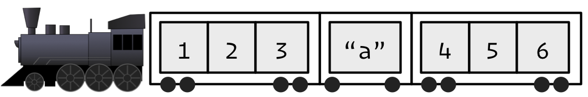
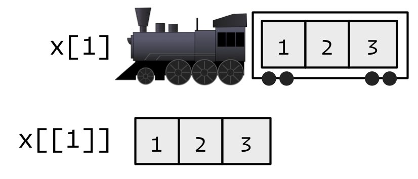
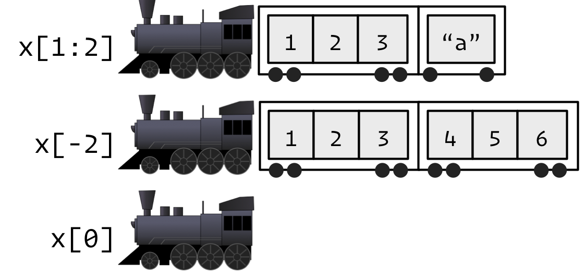

5 Subsetting
R’s subsetting operators are powerful and fast. Mastery of subsetting allows you to succinctly express complex operations in a way that few other languages can match. Subsetting can be hard to learn because you need to master a number of interrelated concepts:
- The three subsetting operators
[select multiple elements[[, and$select a single element
- The six types of subsetting.
- Positive integers return elements at the specified positions
- Negative integers omit elements at the specified positions
- Logical vectors select elements where the corresponding logical value is
TRUE - Nothing returns the original object.
- Zero returns a zero-length object (This is not something you usually do on purpose)
- Character vectors to return elements with matching names.
Important differences in behavior for different objects (e.g., vectors, lists, factors, matrices, and data frames).
The use of subsetting in conjunction with assignment.
It’s easiest to learn how subsetting works for atomic vectors, and then how it generalizes to higher dimensions and other more complicated objects.
5.1 Selecting multiple elements
There is one accessor for selecting multiple elements [.
5.1.1 Atomic vectors
Let’s explore the different types of subsetting with a simple vector, x.
Note that the number after the decimal point gives the original position in the vector.
There are five things that you can use to subset a vector.
- Positive integers return elements at the specified positions
x[c(3, 1)]
#> [1] 3.3 2.1
# order returns an index
x[order(x)]
#> [1] 2.1 3.3 4.2 5.4
# Duplicated indices yield duplicated values
x[c(1, 1)]
#> [1] 2.1 2.1
# Real numbers are silently truncated (not rounded) to integers
x[c(2.1, 2.9)]
#> [1] 4.2 4.2- Negative integers omit elements at the specified positions
You can’t mix positive and negative integers in a single subset.
- Logical vectors select elements where the corresponding logical value is
TRUE. This is probably the most useful type of subsetting because you write the expression that creates the logical vector:
If the logical vector is shorter than the vector being subsetted, it will be recycled to be the same length.
A missing value in the index always yields a missing value in the output.
- Nothing returns the original vector. This is not useful for vectors but is very useful for matrices, data frames, and arrays. It can also be useful in conjunction with assignment.
- Zero returns a zero-length vector. This is not something you usually do on purpose, but it can be helpful for generating test data and testing corner cases of functions.
If the vector is named, you can also use:
- Character vectors to return elements with matching names.
(y <- setNames(x, letters[1:4]))
#> a b c d
#> 2.1 4.2 3.3 5.4
# subsetting by name
y[c("d", "c", "a")]
#> d c a
#> 5.4 3.3 2.1
# Like integer indices, you can repeat indices
y[c("a", "a", "a")]
#> a a a
#> 2.1 2.1 2.1
# When subsetting with [ names are always matched exactly
z <- c(abc = 1, def = 2)
z[c("a", "d")]
#> <NA> <NA>
#> NA NA5.1.2 Matrices and Arrays
You can subset higher-dimensional structures in three ways:
- With multiple vectors.
- With a single vector.
- With a matrix.
The most common way of subsetting matrices (2d) and arrays (>2d) is a simple generalization of 1d subsetting: you supply a 1d index for each dimension, separated by a comma. Blank subsetting is now useful because it lets you keep all rows or all columns.
a <- matrix(1:9, nrow = 3)
colnames(a) <- c("A", "B", "C")
a[1:2, ]
#> A B C
#> [1,] 1 4 7
#> [2,] 2 5 8
a[c(TRUE, FALSE, TRUE), c("B", "A")]
#> B A
#> [1,] 4 1
#> [2,] 6 3
a[2:3, -2]
#> A C
#> [1,] 2 8
#> [2,] 3 9By default, [ will simplify the results to the lowest possible dimensionality. See below how to avoid this behavior.
Because matrices and arrays are implemented as vectors with special attributes, you can subset them with a single vector. In that case, they will behave like a vector. Arrays in R are stored in column-major order:
(vals <- outer(1:5, 1:5, FUN = "paste", sep = ","))
#> [,1] [,2] [,3] [,4] [,5]
#> [1,] "1,1" "1,2" "1,3" "1,4" "1,5"
#> [2,] "2,1" "2,2" "2,3" "2,4" "2,5"
#> [3,] "3,1" "3,2" "3,3" "3,4" "3,5"
#> [4,] "4,1" "4,2" "4,3" "4,4" "4,5"
#> [5,] "5,1" "5,2" "5,3" "5,4" "5,5"
vals[c(4, 15)]
#> [1] "4,1" "5,3"This behavior allows you to replace all missing values in one line.
# make a few values missing
vals[sample(1:25, 5)] <- NA_character_
vals
#> [,1] [,2] [,3] [,4] [,5]
#> [1,] "1,1" "1,2" NA "1,4" "1,5"
#> [2,] NA "2,2" "2,3" "2,4" "2,5"
#> [3,] "3,1" "3,2" "3,3" "3,4" "3,5"
#> [4,] NA NA "4,3" "4,4" NA
#> [5,] "5,1" "5,2" "5,3" "5,4" "5,5"
# replace missing values with "missing"
vals[is.na(vals)] <- "missing"
vals
#> [,1] [,2] [,3] [,4] [,5]
#> [1,] "1,1" "1,2" "missing" "1,4" "1,5"
#> [2,] "missing" "2,2" "2,3" "2,4" "2,5"
#> [3,] "3,1" "3,2" "3,3" "3,4" "3,5"
#> [4,] "missing" "missing" "4,3" "4,4" "missing"
#> [5,] "5,1" "5,2" "5,3" "5,4" "5,5"You can also subset higher-dimensional data structures with an integer matrix (or, if named, a character matrix). Each row in the matrix specifies the location of one value, where each column corresponds to a dimension in the array being subsetted. This means that you use a 2 column matrix to subset a matrix, a 3 column matrix to subset a 3d array, and so on. The result is a vector of values:
5.1.3 Lists
Subsetting a list works in the same way as subsetting an atomic vector. Using [ will always return a list; [[ and $, as described below, let you pull out the components of the list.
5.1.4 Data Frames
Data frames possess the characteristics of both lists and matrices: if you subset with a single vector, they behave like lists; if you subset with two vectors, they behave like matrices.
df <- data.frame(x = 1:3, y = 3:1, z = letters[1:3])
df
#> x y z
#> 1 1 3 a
#> 2 2 2 b
#> 3 3 1 c
# There are two ways to select columns from a data frame
# Like a list:
df[c("x", "z")]
#> x z
#> 1 1 a
#> 2 2 b
#> 3 3 c
# Like a matrix
df[, c("x", "z")]
#> x z
#> 1 1 a
#> 2 2 b
#> 3 3 c
# There's an important difference if you select a single
# column: matrix subsetting simplifies by default, list
# subsetting does not.
str(df["x"])
#> 'data.frame': 3 obs. of 1 variable:
#> $ x: int 1 2 3
str(df[, "x"])
#> int [1:3] 1 2 3
# for row subset like a matrix
df[df$x == 2, ]
#> x y z
#> 2 2 2 b
df[c(1, 3), ]
#> x y z
#> 1 1 3 a
#> 3 3 1 c5.1.5 Preserving dimensionality
By default, any subsetting 2d data structures with a single number, single name, or a logical vector containing a single TRUE will simplify the returned output as described below. To preserve the original dimensionality, you must use drop = FALSE
For matrices and arrays, any dimensions with length 1 will be dropped:
Data frames with a single column will return just that column:
The default drop = TRUE behavior is a common source of bugs in functions: you check your code with a data frame or matrix with multiple columns, and it works. Six months later you (or someone else) uses it with a single column data frame and it fails with a mystifying error. When writing functions, get in the habit of always using drop = FALSE when subsetting a 2d object.
Factor subsetting also has a drop argument, but the meaning it rather different. It controls whether or not levels are preserved (not the dimensionality), and it defaults to FALSE (levels are preserved, not simplified by default). If you find you are using drop = TRUE a lot it’s often a sign that you should be using a character vector instead of a factor.
5.2 Selecting a single elements
There are two other subsetting operators: [[ and $. [[ is used for extracting single values, and $ is a useful shorthand for [[ combined with character subsetting. [[ is most important working with lists because subsetting a list with [ always returns a smaller list. To help make this easier to understand we can use a metaphor:
“If list
xis a train carrying objects, thenx[[5]]is the object in car 5;x[4:6]is a train of cars 4-6.”— @RLangTip, https://twitter.com/RLangTip/status/268375867468681216
Let’s make a simple list and draw it as a train:

When extracting a single element, you have two options: you can create a smaller train, or you can extract the contents of a carriage. This is the difference between [ and [[:

When extracting multiple elements (or zero!), you have to make a smaller train:

Because it can return only a single value, you must use [[ with either a single positive integer or a string. Because data frames are lists of columns, you can use [[ to extract a column from data frames: mtcars[[1]], mtcars[["cyl"]].
If you use a vector with [[, it will subset recursively:
(b <- list(a = list(b = list(c = list(d = 1)))))
#> $a
#> $a$b
#> $a$b$c
#> $a$b$c$d
#> [1] 1
str(b)
#> List of 1
#> $ a:List of 1
#> ..$ b:List of 1
#> .. ..$ c:List of 1
#> .. .. ..$ d: num 1
b[[c("a", "b", "c", "d")]]
#> [1] 1
# Equivalent to
b[["a"]][["b"]][["c"]][["d"]]
#> [1] 1[[ is crucial for working with lists, but I recommend using it whenever you want your code to clearly express that it’s working with a single value. That frequently arises in for loops, i.e. instead of writing:
It’s better to write:
5.2.1 $
$ is a shorthand operator: x$y is roughly equivalent to x[["y"]]. It’s often used to access variables in a data frame, as in mtcars$cyl or diamonds$carat. One common mistake with $ is to try and use it when you have the name of a column stored in a variable:
var <- "cyl"
# Doesn't work - mtcars$var translated to mtcars[["var"]]
mtcars$var
#> NULL
# Instead use [[
mtcars[[var]]
#> [1] 6 6 4 6 8 6 8 4 4 6 6 8 8 8 8 8 8 4 4 4 4 8 8 8 8 4 4 4 8 6 8 4There’s one important difference between $ and [[. $ does partial matching:
It is usually a good idea to NOT use partial matching. It tends to to lead to hard to track down bugs and makes your code much less readable. With auto complete in RStudio it tends not to save any time or keystrokes.
5.2.2 Missing/out of bounds indices
TL;DR version use purrr::pluck(), which we will get to in R for Data Science
It’s useful to understand what happens with [ and [[ when you use an “invalid” index. The following tables summarize what happen when you subset a logical vector, list, and NULL with an out-of-bounds value (OOB), a missing value (i.e NA_integer_), and a zero-length object (like NULL or logical()) with [ and [[. Each cell shows the result of subsetting the data structure named in the row by the type of index described in the column. I’ve only shown the results for logical vectors, but other atomic vectors behave similarly, returning elements of the same type.
row[col] |
Zero-length | OOB | Missing |
|---|---|---|---|
| Logical | logical(0) |
NA |
NA |
| List | list() |
list(NULL) |
list(NULL) |
NULL |
NULL |
NULL |
NULL |
x <- c(TRUE, FALSE, TRUE)
x[NULL]
#> logical(0)
x[10]
#> [1] NA
x[NA_real_]
#> [1] NA
y <- list(abc = 1, def = 2, ghi = c(4:6))
y[NULL]
#> named list()
y[10]
#> $<NA>
#> NULL
y[NA_real_]
#> $<NA>
#> NULL
NULL[NULL]
#> NULL
NULL[1]
#> NULL
NULL[NA_real_]
#> NULLWith [, it doesn’t matter whether the OOB index is a position or a name, but it does for [[:
row[[col]] |
Zero-length | OOB (int) | OOB (chr) | Missing |
|---|---|---|---|---|
| Atomic | Error | Error | Error | Error |
| List | Error | Error | NULL |
NULL |
NULL |
NULL |
NULL |
NULL |
NULL |
x
#> [1] TRUE FALSE TRUE
x[[NULL]]
#> Error in x[[NULL]]: attempt to select less than one element in get1index
x[[10]]
#> Error in x[[10]]: subscript out of bounds
x[["x"]]
#> Error in x[["x"]]: subscript out of bounds
x[[NA_real_]]
#> Error in x[[NA_real_]]: subscript out of bounds
y
#> $abc
#> [1] 1
#>
#> $def
#> [1] 2
#>
#> $ghi
#> [1] 4 5 6
y[[NULL]]
#> Error in y[[NULL]]: attempt to select less than one element in get1index
y[[10]]
#> Error in y[[10]]: subscript out of bounds
y[["x"]]
#> NULL
y[[NA_real_]]
#> NULL
NULL[[NULL]]
#> NULL
NULL[[1]]
#> NULL
NULL[["x"]]
#> NULL
NULL[[NA_real_]]
#> NULLIf the input vector is named, then the names of OOB, missing, or NULL components will be "<NA>".
5.3 Subsetting and assignment
All subsetting operators can be combined with assignment to modify selected values of the input vector.
x <- 1:5
x[c(1, 2)] <- 2:3
x
#> [1] 2 3 3 4 5
# The length of the LHS needs to match the RHS
x[-1] <- 4:1
x
#> [1] 2 4 3 2 1
# Duplicated indices go unchecked and may be problematic
x[c(1, 1)] <- 2:3
x
#> [1] 3 4 3 2 1
# You can't combine integer indices with NA
x[c(1, NA)] <- c(1, 2)
#> Error in x[c(1, NA)] <- c(1, 2): NAs are not allowed in subscripted assignments
# But you can combine logical indices with NA
# (where they are treated as FALSE).
x[c(T, F, NA)] <- 1
x
#> [1] 1 4 3 1 1
# This is mostly useful when conditionally modifying vectors
df <- data.frame(a = c(1, 10, NA))
df$a[df$a < 5] <- 0
df$a
#> [1] 0 10 NASubsetting with nothing can be useful in conjunction with assignment because it will preserve the original object class and structure. Compare the following two expressions. In the first, mtcars will remain as a data frame. In the second, mtcars will become a list.
With lists, you can use [[ + assignment + NULL to remove components from a list. To add a literal NULL to a list, use [ and list(NULL):
5.4 Applications
The basic principles described above give rise to a wide variety of useful applications. Some of the most important are described below. Many of these basic techniques are wrapped up into more concise functions (e.g., subset(), merge(), dplyr::arrange()), but it is useful to understand how they are implemented with basic subsetting. This will allow you to adapt to new situations that are not dealt with by existing functions.
5.4.1 Lookup tables (character subsetting)
Character matching provides a powerful way to make look-up tables. Say you want to convert abbreviations:
x <- c("m", "f", "u", "f", "f", "m", "m")
lookup <- c(m = "Male", f = "Female", u = NA)
lookup[x]
#> m f u f f m m
#> "Male" "Female" NA "Female" "Female" "Male" "Male"
unname(lookup[x])
#> [1] "Male" "Female" NA "Female" "Female" "Male" "Male"If you don’t want names in the result, use unname() to remove them.
5.4.2 Ordering (integer subsetting)
order() takes a vector as input and returns an integer vector describing how the subsetted vector should be ordered:
To break ties, you can supply additional variables to order(), and you can change from ascending to descending order using decreasing = TRUE. By default, any missing values will be put at the end of the vector; however, you can remove them with na.last = NA or put at the front with na.last = FALSE.
For two or more dimensions, order() and integer subsetting makes it easy to order either the rows or columns of an object:
(df <- data.frame(x = rep(1:3, each = 2), y = 6:1, z = letters[1:6]))
#> x y z
#> 1 1 6 a
#> 2 1 5 b
#> 3 2 4 c
#> 4 2 3 d
#> 5 3 2 e
#> 6 3 1 f
# Randomly reorder df
df2 <- df[sample(nrow(df)), 3:1]
df2
#> z y x
#> 3 c 4 2
#> 2 b 5 1
#> 5 e 2 3
#> 6 f 1 3
#> 4 d 3 2
#> 1 a 6 1
df2[order(df2$x), ]
#> z y x
#> 2 b 5 1
#> 1 a 6 1
#> 3 c 4 2
#> 4 d 3 2
#> 5 e 2 3
#> 6 f 1 3
df2[, order(names(df2))]
#> x y z
#> 3 2 4 c
#> 2 1 5 b
#> 5 3 2 e
#> 6 3 1 f
#> 4 2 3 d
#> 1 1 6 aYou can sort vectors directly with sort(), or use dplyr::arrange() or similar to sort a data frame.
5.4.3 Selecting rows based on a condition (logical subsetting)
Because it allows you to easily combine conditions from multiple columns, logical subsetting is probably the most commonly used technique for extracting rows out of a data frame.
mtcars[mtcars$gear == 5, ]
#> mpg cyl disp hp drat wt qsec vs am gear carb
#> Porsche 914-2 26.0 4 120.3 91 4.43 2.14 16.7 0 1 5 2
#> Lotus Europa 30.4 4 95.1 113 3.77 1.51 16.9 1 1 5 2
#> Ford Pantera L 15.8 8 351.0 264 4.22 3.17 14.5 0 1 5 4
#> Ferrari Dino 19.7 6 145.0 175 3.62 2.77 15.5 0 1 5 6
#> Maserati Bora 15.0 8 301.0 335 3.54 3.57 14.6 0 1 5 8
mtcars[mtcars$gear == 5 & mtcars$cyl == 4, ]
#> mpg cyl disp hp drat wt qsec vs am gear carb
#> Porsche 914-2 26.0 4 120.3 91 4.43 2.14 16.7 0 1 5 2
#> Lotus Europa 30.4 4 95.1 113 3.77 1.51 16.9 1 1 5 2Remember to use the vector boolean operators & and |, not the short-circuiting scalar operators && and || which are more useful inside if statements. Don’t forget De Morgan’s laws, which can be useful to simplify negations:
!(X & Y)is the same as!X | !Y!(X | Y)is the same as!X & !Y
For example, !(X & !(Y | Z)) simplifies to !X | !!(Y|Z), and then to !X | Y | Z.
subset() is a specialized shorthand function for subsetting data frames, and saves some typing because you don’t need to repeat the name of the data frame..
subset(mtcars, gear == 5)
#> mpg cyl disp hp drat wt qsec vs am gear carb
#> Porsche 914-2 26.0 4 120.3 91 4.43 2.14 16.7 0 1 5 2
#> Lotus Europa 30.4 4 95.1 113 3.77 1.51 16.9 1 1 5 2
#> Ford Pantera L 15.8 8 351.0 264 4.22 3.17 14.5 0 1 5 4
#> Ferrari Dino 19.7 6 145.0 175 3.62 2.77 15.5 0 1 5 6
#> Maserati Bora 15.0 8 301.0 335 3.54 3.57 14.6 0 1 5 8
subset(mtcars, gear == 5 & cyl == 4)
#> mpg cyl disp hp drat wt qsec vs am gear carb
#> Porsche 914-2 26.0 4 120.3 91 4.43 2.14 16.7 0 1 5 2
#> Lotus Europa 30.4 4 95.1 113 3.77 1.51 16.9 1 1 5 25.4.4 Removing columns from data frames (character subsetting)
There are two ways to remove columns from a data frame. You can set individual columns to NULL:
Or you can subset to return only the columns you want:
df <- data.frame(x = 1:3, y = 3:1, z = letters[1:3])
df[c("x", "y")]
#> x y
#> 1 1 3
#> 2 2 2
#> 3 3 1If you know the columns you don’t want, use set operations to work out which columns to keep:
5.4.5 Random samples/bootstrap (integer subsetting)
You can use integer indices to perform random sampling or bootstrapping of a vector or data frame. sample() generates a vector of indices, then subsetting accesses the values:
(df <- data.frame(x = rep(1:3, each = 2), y = 6:1, z = letters[1:6]))
#> x y z
#> 1 1 6 a
#> 2 1 5 b
#> 3 2 4 c
#> 4 2 3 d
#> 5 3 2 e
#> 6 3 1 f
# Randomly reorder
df[sample(nrow(df)), ]
#> x y z
#> 5 3 2 e
#> 4 2 3 d
#> 1 1 6 a
#> 3 2 4 c
#> 6 3 1 f
#> 2 1 5 b
# Select 3 random rows
df[sample(nrow(df), 3), ]
#> x y z
#> 6 3 1 f
#> 5 3 2 e
#> 3 2 4 c
# Select 6 bootstrap replicates
df[sample(nrow(df), 6, rep = TRUE), ]
#> x y z
#> 2 1 5 b
#> 6 3 1 f
#> 3 2 4 c
#> 3.1 2 4 c
#> 6.1 3 1 f
#> 1 1 6 aThe arguments of sample() control the number of samples to extract, and whether sampling is performed with or without replacement.
5.4.6 Boolean algebra vs. sets (logical & integer subsetting)
It’s useful to be aware of the natural equivalence between set operations (integer subsetting) and boolean algebra (logical subsetting). Using set operations is more effective when:
You want to find the first (or last)
TRUE.You have very few
TRUEs and very manyFALSEs; a set representation may be faster and require less storage.
which() allows you to convert a boolean representation to an integer representation.
Let’s create two logical vectors and their integer equivalents and then explore the relationship between boolean and set operations.
(x1 <- 1:10 %% 2 == 0)
#> [1] FALSE TRUE FALSE TRUE FALSE TRUE FALSE TRUE FALSE TRUE
(x2 <- which(x1))
#> [1] 2 4 6 8 10
(y1 <- 1:10 %% 5 == 0)
#> [1] FALSE FALSE FALSE FALSE TRUE FALSE FALSE FALSE FALSE TRUE
(y2 <- which(y1))
#> [1] 5 10
# X & Y <-> intersect(x, y)
x1 & y1
#> [1] FALSE FALSE FALSE FALSE FALSE FALSE FALSE FALSE FALSE TRUE
intersect(x2, y2)
#> [1] 10
# X | Y <-> union(x, y)
x1 | y1
#> [1] FALSE TRUE FALSE TRUE TRUE TRUE FALSE TRUE FALSE TRUE
union(x2, y2)
#> [1] 2 4 6 8 10 5
# X & !Y <-> setdiff(x, y)
x1 & !y1
#> [1] FALSE TRUE FALSE TRUE FALSE TRUE FALSE TRUE FALSE FALSE
setdiff(x2, y2)
#> [1] 2 4 6 8
# xor(X, Y) <-> setdiff(union(x, y), intersect(x, y))
xor(x1, y1)
#> [1] FALSE TRUE FALSE TRUE TRUE TRUE FALSE TRUE FALSE FALSE
setdiff(union(x2, y2), intersect(x2, y2))
#> [1] 2 4 6 8 5When first learning subsetting, a common mistake is to use x[which(y)] instead of x[y]. Here the which() achieves nothing: it switches from logical to integer subsetting but the result will be exactly the same. In more general cases, there are two important differences. First, when the logical vector contains NA, logical subsetting replaces these values by NA while which() drops these values. Second, x[-which(y)] is not equivalent to x[!y]: if y is all FALSE, which(y) will be integer(0) and -integer(0) is still integer(0), so you’ll get no values, instead of all values. In general, avoid switching from logical to integer subsetting unless you want, for example, the first or last TRUE value.
5.5 Exercises
- Install the tidyverse package, if you already have it installed upgrade to the latest version. This can be done by either typing
install.packages("tidyverse")in the console or by using the “Packages” tab inside RStudio.
The tideverse package is a collection of other packages and will take a while to install. Also, you may get an error that R could not move a file or package from a temporary directory to it’s final location. This happens because of our corporate virus scanner. The file is being virus scanned when R tries to move it. The simplest solution it reinstall just the offending package. You can also go to the temporary directory and manually move it via windows explorer.
Read A Layered Grammar of Graphics. This is a shortish paper that introduces the concepts of the grammar of graphics and forms the basis for
ggplot.Read and do the exercises in Chapters 1-3 of R for Data Science.
Bring a couple example plots from out reports to next class. The goal is to have each of us work an a different type of plot so we can begin to build our plotting library.
which()allows you to convert a boolean representation to an integer representation. There’s no reverse operation in base R. Create anunwhichfunction.unwhich(which(x), length(x))should return your original vector.